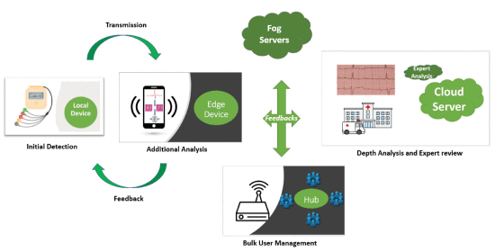
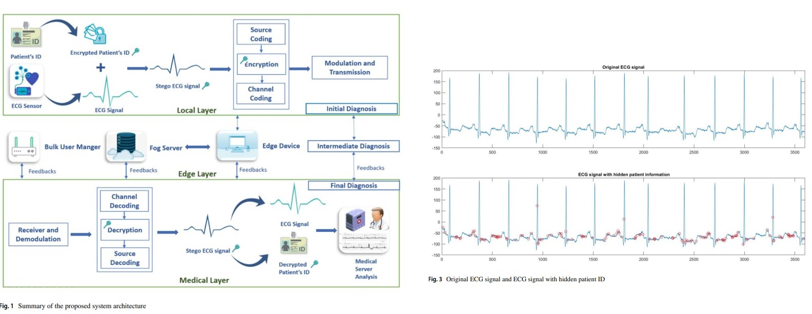
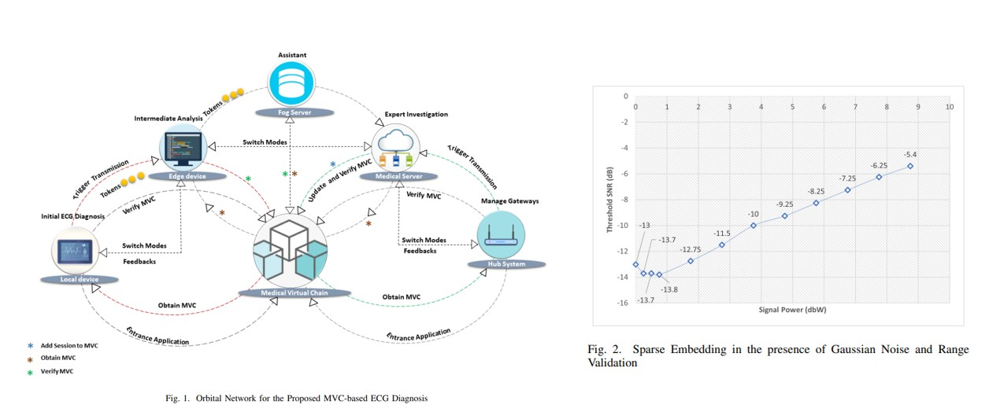
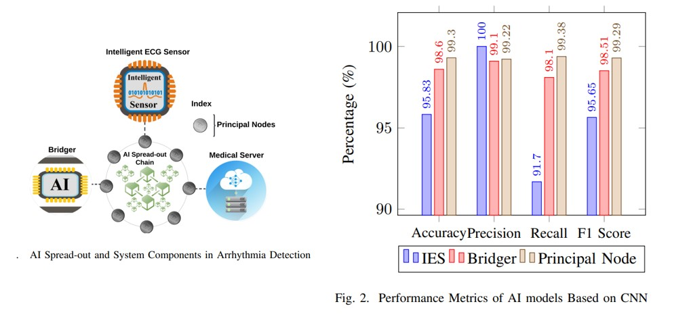
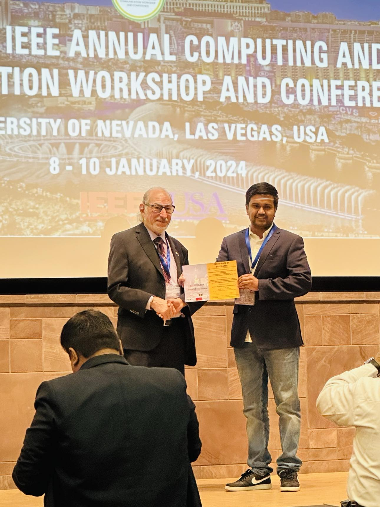
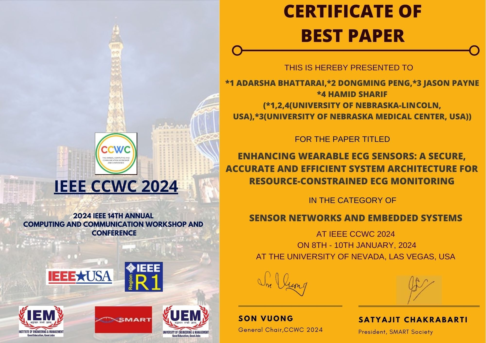
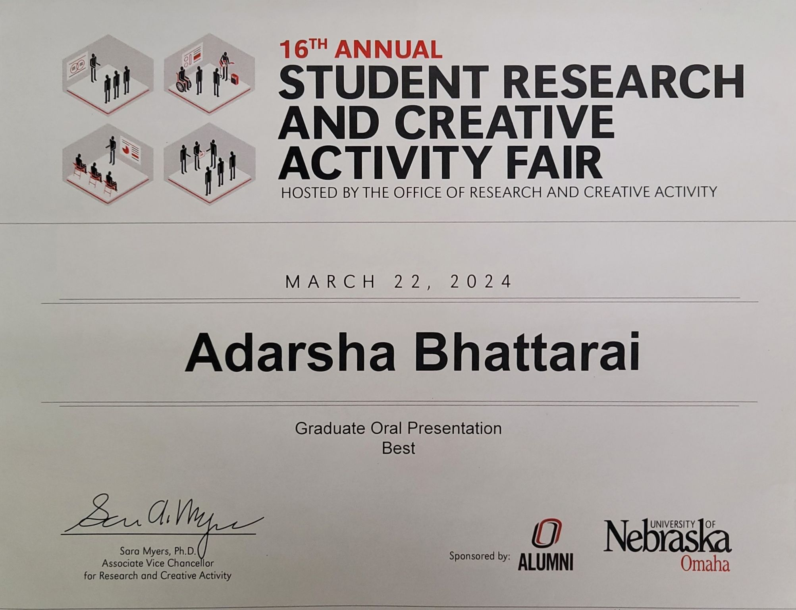

Adarsha Bhattarai
PH.D. Candidate in Computer Engineering | Machine Learning and Computer Vision | Best Research Awardee by IEEE
About Me
I am a Ph.D. candidate in the Department of Electrical and Computer Engineering at the
University of Nebraska–Lincoln, specializing in Machine Learning and Computer Vision. I was honored with the Best Research Award by
IEEE CCWC and the
Best Presenter Award by the University of Nebraska in 2024. I have a strong background in signals and systems, digital signal processing, image processing, machine learning,
and computer vision. I have applied this knowledge across various domains, from agriculture to medical applications.
In the past, I worked on the design and development of a multispectral imaging drone electrical system for agricultural purposes, which was also the topic of my
undergraduate thesis. I continued this research as part of
an image processing course project at the University of Nebraska–Omaha. My current research journey is primarily focused on medical applications, involving
collaborations with leading professionals and innovative projects in medical image analysis, particularly in remote ECG monitoring and accelerated CEST MRI acquisition.
I received my B.S. in Electrical and Electronics Engineering from Istanbul University, where I graduated with honors and ranked 2nd in my class. Prior to that, I secured 2nd rank overall in Nepal for the Grade 12 science major, a notable achievement that was featured in a national newspaper.
My ultimate goal is to leverage my expertise in signal processing and machine learning in various aplication such as healthcare technology to drive impactful advancements in medical diagnostics and patient care. During my tenure as an R&D intern at Endless Health, I fine-tuned generative LLM models for heart disease risk assessment, integrating these findings into mobile health solutions. I am also passionate about bridging the gap between cutting-edge research and clinical applications, making healthcare more accessible and efficient.
You can connect with me via email at abhattarai3@huskers.unl.edu.
-

Bhattarai, Adarsha, et al. IEEE Access 10 (2022): 63684-63697.
Read the paper
-

Bhattarai, Adarsha, and Dongming Peng. Springer Nature Computer Science 4.1 (2022): 45.
Read the paper
-

Bhattarai, Adarsha, and Dongming Peng. Springer Nature Computer Science 5.4 (2024): 329.
Read the paper
-

Bhattarai, Adarsha, et al. 2024 IEEE 14th Annual Computing and Communication Workshop and Conference (CCWC).
Read the paper
-

Bhattarai, Adarsha, Yutong Liu, and Dongming Peng. 2024 IEEE World AI IoT Congress (AIIoT).
Read the paper
Specialization Courses Completed
Grant and Fellowship
- GRACA Grant - University of Nebraska Omaha (05/2023-08/2023)
The research proposal "Security Mechanisms and Communication Strategies for the Adaptive Partition of Remote Electrocardiogram (ECG) Diagnosis Between Wearable Sensor Net and Cloud" was approved for funding for $5,000.00
- Holling Fellowship - University of Nebraska-Lincoln (07/2022-present)
- Bosporus Scholarship Fellow - Istanbul University (08/2017-07/2021)
- Golden Jubilee Fellowship - Government of India (02/2015-02/2016)
Competencies
- Predictive and Generative Modeling: Image classification, Regression tasks, Clustering, Natural Language Processing, Anomaly Detection, Autoencoders
- Physiological Signal Classification: 2D-Convolutional Neural Network, Transfer Learning, AlexNet, GoogLeNet
- Medical Image Analysis and Interpretation: Brain Network Mapping using FSL, Medical Image Processing, Analysis and Visualization (MIPAV), Seed Based Analysis, Independent Component Analysis (ICA)
- Programming: MATLAB, C/C++, Python, R, Verilog, LabVIEW
- Numerical Computing and Tools: Pytorch, NumPy, Pandas, Scikit-learn, Github, Tensorflow, Insomnia API
- Cloud Computing: Holland Computing Center (Fastest in Nebraska), AWS, GCP
Certifications
Education
University of Nebraska – Lincoln, NE, USA (08/2021-present)
PhD in Engineering, Specialization in Computer Engineering
GPA: 3.93/4.0
Earned PH.D. candidacy; Expected graduation in Summer of 2025
Istanbul University, Istanbul, Turkey (08/2017-06/2021)
B.S. in Electrical and Electronics Engineering
GPA: 3.73/4.0 Rank: 2
Invited Conference Talks and Awards
- Best Research Paper Award: 2024 IEEE 14th Annual CCWC (Las Vegas, Nevada)
- Best Oral Presentation Award: UNO Student Research Fair, March 2024 (Nebraska, Omaha).
- Artificial Intelligence Conference: 2024 IEEE World AI IoT Congress (Seattle, Washington).



Internships
R&D Intern at Endless Health, Austin, Texas, USA Summer 2023
Assessed the risk of developing heart diseases by fine-tuning Meta's Generative AI (LLaMA 2.0) to categorize a large health-based food ingredients database.
Industry Intern at Furmak Machinery, Istanbul, Turkey Winter 2021
Programmed Siemens PLC S7-300 for HERMLE C50U CNC machine.
Industry Intern at Kiliç Machines and Automations, Istanbul, Turkey Summer 2020
Designed electrical circuit boards for automated machines manufacturing artificial turfs.
Research Intern, Koç University , Istanbul, Turkey Summer 2019
Proposed smart home applications utilizing IoT Kit; programmed experiments using various technologies.
Teaching Experience
Graduate Teaching Assistant, University of Nebraska – Lincoln, NE, USA (01/2022-present)
Instructor: Lectured C programming course; Lab Teacher: Hosted Digital Design Interfacing course labs.
Presentation and Lectures